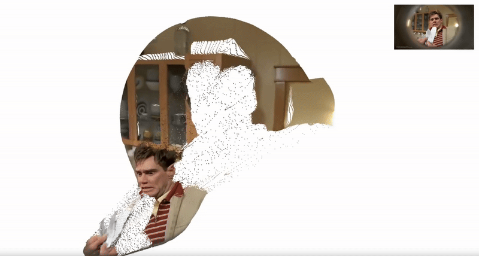

Introduction to My Work!
Essential Readings
More Theoretical Backing
Network Map
Methods of Madness
Some Experimental Stuff
What am I getting at?
Project Proposal?
|
This semester, I experimented with several different interactive visualizations and projection formats. A central inspiration for this work was Lauren Lee McCarthy, whose project Surrogate deeply influenced the direction of my explorations.
In Surrogate, McCarthy offers herself as a human surrogate for those interested in having children, raising questions around bodily autonomy, algorithmic intimacy, emotional labor, and the increasingly porous boundaries between human and machine. Her work blends performance, code, and critical reflection, and it grounded many of the concerns I wanted to explore through my own visual and interactive designs.
The following experiments all relate to, respond to, or take inspiration from Surrogate and McCarthy’s broader body of work:
Network Visualization:
This is a first iteration of an interactive network map built to examine the social, technological, and institutional relationships embedded within Surrogate. It attempts to visualize the complex mesh of actors—including the artist, institutions, technologies, and ideologies—that support or complicate the project’s narrative.
Chronopolitical Timeline:
This projection situates Surrogate within a broader temporal context, mapping key cultural, political, and technological events that parallel the themes McCarthy engages. It’s a prototype for a timeline interface that could allow viewers to trace correlations between digital governance, reproductive rights, and embodiment over time.
Precedent Study Collage:

A more visual exploration, this collage breaks down specific formal and thematic choices made by McCarthy. It served as a reference point during the development of my own aesthetic and conceptual language across projects.
Post-Body Archives is an interactive design experiment and spatial archive that explores what remains when the body is rendered uncomputable. Rooted in a decolonial, cyborgian ethic, the project resists the predictive gaze of algorithmic systems, reclaiming both physical and digital space as sites of refusal, memory, and spectral presence.
Using machine learning, the project identifies human figures in photographs of real-world environments and renders them as white silhouettes—ghosts, remnants, or voids within the scene. These altered images are then passed through UniK3D, a model that reconstructs metric 3D scenes from single images, resulting in fragmented point clouds that carry the imprint of what was intentionally erased.
The final work exists in two forms:
1. Spatial Installation A full-body interactive projection invites viewers to explore these haunted environments. Using cameras and spatial sensors, the system tracks movement—allowing visitors to shift their perspective through bodily presence rather than keyboard or mouse. The installation responds subtly: point clouds may flicker, stretch, or blur when viewers approach the ghosted areas, creating a living archive of unresolvable presence.
2. Game-Like Archive As a parallel digital artifact, Post-Body Archives takes form as a nonlinear, exploratory game. Players traverse a collection of spectral 3D environments—each once-inhabited, now partially erased. There is no objective, no score, no completion. Only wandering, wondering, and witnessing what computation tried (and failed) to predict. Metadata is poetic, fractured, or hidden—refusing to be neatly indexed.
Post-Body Archives proposes that bodies can haunt computational space without being captured by it. That absence is not emptiness, but testimony. That archives do not always preserve—they can glitch, resist, and remember differently.